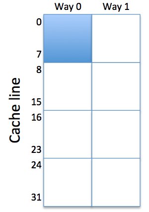

Lab 8: Caches
When entering numeric values in the answer fields, you can use integers (1000), floating-point numbers (1000.0), scientific notation (1e3), engineering scale factors (1K), or numeric expressions (3*300 + 100).
Useful links:
Problem 1. Cache Architectures
Please read "Appendix: BSim Cache Simulation" below to learn how to drive the cache simulator that's built into BSim.
We'll be using the following test program to explore the behavior of caches:
.include "beta.uasm"
// A little cache benchmarking program: adds N words from
// array A, then repeats. The starting addresses for the
// program and the array A are set by the I and A symbols
// below.
. = 0
BR(test) // branch to the start of the benchmark
I = 0x200 // location of benchmark program
A = 0x240 // starting address of array A
N = 16 // size of data region (in words)
. = I // start benchmark program here
test:
CMOVE(N,R0) // initialize loop index J
CMOVE(0,R1)
loop: // add up elements in array
SUBC(R0,1,R0) // decrement index
MULC(R0,4,R2) // convert to byte offset
LD(R2,A,R3) // load value from A[J]
ADDC(R3,0,R1) // add to sum
BNE(R0,loop) // loop until all words are summed
BR(test) // perform test again!
// allocate space to hold array
. = A
STORAGE(N) // N words
This test program is pre-loaded into the BSim instance below. Note that any changes you make to the program (e.g., changing symbol values) will not be saved when leaving the BSim window. "cache_test.uasm" tab has a read-only version of the program in case you need to copy it into the "Lab 6" to start with a clean slate.
Ideal Cache Behavior
Try assembling the program, opening the cache control, turning on the cache, then clicking on the "Run Fast" control, which runs the test in a continuous loop. You'll observe that with the initial placement of the instructions and the array, and the initial cache configuration, the cache hit ratio is essentially 1.00.
- There are few compulsory misses (e.g., 9 IFetch
misses), i.e., misses that bring the instructions and data into
the initially empty cache. If the value of the symbol N were
temporarily changed from 16 to 8, what would the new miss numbers be?
The key to understanding cache performance is understanding how the memory address received from the CPU is processed by the cache hardware. Here's the right recipe:
- Look at the assembly language program to determine instruction and data addresses generated by the CPU as the program executes. The sequence of addresses is sometimes called the reference string.
- Then look at the "Address bits" info in the cache control panel to determine how each memory address is divided into offset, index and tag fields. The index bits determine the cache line and the tag bits of the address are compared with the the tag field of the selected cache line to determine if there's a hit.
Our cache has 64 data words altogether. The initial configuration is direct mapped with 1 word/line, so the cache has 64 lines numbered 0 through 63. To achieve the 100% hit ratio, it must be the case that the instructions and array data can reside in the cache at the same time.
- Please determine which cache line will hold each of the
following instruction or data words. And for practice, compute
the tag field for each of the addresses. Remember that to enter an
address in hex, you should include a 0x prefix.
Aha! All the instruction and data words map to different cache lines, so all of instructions and data accessed by the loop can reside in the cache at the same time.
Collisions
Now let's change the location of the A array in memory by modifying the appropriate line in the assembly language program to be
A = 0x300 // starting address of array A
If you changed N to 8 for the previous question, please reset it to 16. Rerun the simulation for a while with the cache enabled and observe that the hit ratio on instruction fetch is now .904 and the overall hit ratio is .838.
- Determine which cache lines will now hold the A array and compute
the associated tag field.
Moving A means that addresses for A[0] through A[7] are mapped into the same cache lines as those used for the instructions. The data accesses to A and instruction fetches are said to collide, i.e., since their addresses map to the same cache lines, they contend for residency in the direct-mapped cache.
- The data for A[4] maps to the same cache line as which
instruction? Recall that A[0], the first element of the array
is located at address 0x300.
Why is the long-term instruction fetch hit ratio .904? Let's do the calculations for one complete iteration of the outer loop, which involves N (16) iterations of the inner loop. Consider execution starting with the instruction at test: and ending when the same instruction is about to be executed again.
- What is the total number of instruction fetches during
one full iteration of the outer loop?
The sixteen iterations of the inner loop access A[15] down to A[0]. Recall that accesses to A[0] through A[7] collide with the instructions. So some of those data access will end up replacing an instruction in the cache, which will then cause a cache miss when that instruction is fetched on the next iteration of the inner loop.
- What are total numbers of misses and hits for one full
iteration of the outer loop?
If we compute the hit ratio as hits/(total fetches) we get 0.9036.
Associativity
Keeping the new address for the A array, change the associativity setting from "direct mapped" to "2-way". Note that the 64 total cache lines are now divided into two ways, each having 32 lines. So the address bits used to select the cache line are a bit different (pun intended!) than before. If you added a .breakpoint, you can remove it now. Rerun the simulation for a while and observe the new hit ratio: 1.00 again!
- Why does the 2-way set-associative cache have a
better hit ratio on data accesses than the direct-mapped cache?
A[0] through A[7] and the instructions now map to disjoint sets of cache lines and no longer collide. A[0] and CMOVE(N,R0) can both reside in the cache at the same time (one in each of the two ways) even though their addresses map to the same cache line. And so on for the other collisions in the direct-mapped cache. There's a bug in the cache simulation.
So far our experiements have involved only a few instructions and data words which will all fit in the 64-word cache if we can arrange for them not to collide either by appropriate choice of addressing or by using a 2-way set-associative cache.
Now let's consider what happens when we access a much larger array. Modify the assembly language program to be
A = 0x300 // starting address of array A N = 64 // size of data region (words)Run the modified program with the most recent cache settings: 64 total words, 1 word/line, 2-way associativity.
- Report the hit ratio percentages for Ifetch and Dread:
You should be able to explain these results!
The very high Ifetch hit ratio is pretty easy to explain, using the approach from parts (E) and (F). The instructions in the inner loop are all executed once for each data access, so the cache lines holding these instructions will never be "least recently used" when a cache line needs to be replaced due to a data miss. This means the instructions in the inner loop will always be in one way of the cache after the initial instruction fetch. So it's just the 2 instructions at the beginning of the outer loop and the one at the end that generate the 3 misses for each iteration of the outer loop. Running the numbers: total instruction fetches = 64*5+3 = 323; total misses = 3; Ifetch hit ratio = 320/323 = 0.9907.

To analyze the Dfetch hit ratio, it's helpful to refer to the figure on the right, which sketches the layout of a 2-way set-associative cache with 64 total words. The instructions occupy lines 0-7 in one of the ways (shown conceptually as the shaded area of the cache). That leaves the other 7/8 of the cache for holding array data.
The 64 elements of the array collide with themselves in a cache with 32 lines.
- For example, A[17] collides with A[i]
for what value of i?
Since the cache is 2-way set-associative, two addresses that collide can both reside in the cache. So 75% of the array values (those that map to cache lines 8 through 31) will stay in the cache once they're loaded. But 25% of the array elements also collide with the instructions.
- There are two array values, A[j] and A[k],
that collide with the instruction ADDC(R3,0,R1).
What are the values for j and k? Enter the
smaller of the two indicies as the value for j.
It's these 25% of the array elements that collide with each other that lead to cache misses and refills from one iteration of the outer loop to the next. Hence the .75 hit ratio for Dfetches.
Block size (words/cache line)
Finally, let's make one last adjustment to the cache controls: change the words/line to the value 2, still keeping the address of the array at 0x300. This changes the layout of the cache once again: each of the 2 ways now has 16 cache lines, but each cache line now holds 2 words of data. The first word in a cache line will be from a memory location whose byte address is a multiple of 8, the second word will be from the following memory location. When a cache line is refilled both words are read from memory and stored in the cache -- there's no notion of a partially-filled cache line.
Suppose A[53] is resident in our cache as currently configured (64 total words, 2 words/line, 2-way set-associative).
- Looking at the assembly language program, determine
the memory address for A[53].
If A[53] is resident in the cache, in which cache line will it reside? In other words, what's the value of the index field of the address you entered above?
If A[53] is resident in the cache, what will be the value of the tag field for that line?
Rerun the program for a while with the new cache configuration.
- Report the hit ratio percentages for Dread:
Doubling the number of words/line has halved the number of Dread misses in each iteration of the outer loop! Why? The refill triggered by each miss brings in two entries from the array, the one that's needed to satisfy the current LD instruction, and the memory location that will be accessed by LD in the next iteration of the inner loop. For example, if there's a miss when loading A[7], both A[6] and A[7] are brought into the cache. On the next iteration, the load of A[6] will be a hit! So every second LD access is now a hit.
Moral of the story: sequential array accesses are good examples of the principal of locality. An increased words/line will bring in neighboring array elements on a miss and those neighbors will be accessed in successive iterations. So at a slightly larger refill cost (bringing in the extra words), there's a big impact on the miss rate.
Problem 2. Design Problem: Set-associative Instruction Cache
See the instructions below.
Instructions
In this lab, you'll design a 2-way set-associative instruction cache with a block size of 2 and an LRU replacement strategy. Most modern CPUs use separate caches for instruction fetch and data accesses as the first level of their memory hierarchy. That way misses from data accesses will never interfere with cached instructions, potentially increasing the hit rate of the instruction cache. Instruction caches can be simpler since they don't have to deal with write requests and so don't need the machinery associated with dirty bits, write back, etc.
We'll test your design using the /caches/test module:
On the right of the diagram is the 64-bit wide main memory -- we're only showing the one port used for reading instructions. This memory takes two clock cycles to complete a read operation. The 64-bit width is a perfect match for the 2-word block size, i.e., a single access to main memory can refill an entire line of cache.
You'll be designing the component on the left, highlighted in red. On its left are the interface signals that connect to the instruction address (ia[31:0]) and instruction data (id[31:0]). There's one additional signal, irdy, that the cache generates to tell the Beta that the cache has completed the requested instruction fetch during the current clock period. If there's a cache hit, the request is completed in the cycle it is issued. Otherwise, it will take two additional cycles before the request is complete since the cache will have to access the slower main memory.
These signals are described in detail in the final section of this document.
You'll be entering your cache circuitry in the schematic for the /caches/icache module. To test your design, use the /caches/test module.
Cache memory
Each way of our 2-way set-associative cache will contain 32 cache lines and each cache line holds 2 data words. So to complete a cache access, the incoming instruction address is divided up as follows:
| ia[1:0] | byte offset (ignored by cache) |
| ia[2] | word offset (selects word from 2-word cache line) |
| ia[7:3] | 5-bit cache line index (selects cache line) |
| ia[31:8] | 24-bit address tag field |
| valid | 1-bit flag is 1 if cache line is valid |
| tag[23:0] | 24-bit tag field for this cache line |
| cdata[63:0] | 64 bits (2 words) of data |
which is a total of 89 bits. So each way requires its own 2-port 32x89 memory. One port is used for reading out the valid/tag/data information for the requested cache line, and the other port is used to write valid/tag/data information when a cache line is refilled. So you'll need to add something like the following to the icache schematic:
To initialize the valid bits for each line to 0, the initial contents for each location should be specified as 0. To do this, edit the memory's contents property and enter 32 lines of 0.
Of course, you'll have two of these with the appropriate changes to signal names to keep the valid/tag/data info separate. xdata[63:0] is the 64-bit data coming back from main memory during a refill operation. The write enable signal (cwe0) is discussed in the next section.
Cache control logic
On each cycle, the cache reads the line requested by the cache line index field of the instruction address and then checks to see if there's a cache hit by comparing the tag fields of the cache line and instruction address:
We get a cache hit if the tags match, the cache line is valid and (so we deal with start up correctly) if the reset signal is 0. Here we've used the handy /caches/equal24 module that compares two 24-bit values and tells us if they're equal. Again, you'll need a copy of this logic for each way.
So now we know if a request has hit in either of the ways. The next step is to deal with misses and generate the irdy when the instruction data is ready to go. We can use a 3-state FSM to control the cache operation:
- a request is a hit if in one of the ways the selected cache line is valid, the address tag field matches the cache line's tag field, and reset = 0.
- a request is a miss if neither way reported a hit: $\textrm{miss}= \overline{\textrm{reset}} \cdot \overline{\textrm{hit0}} \cdot \overline{\textrm{hit1}}$.
- hit. If the request is a hit, it can be satisfied by using ia[2] to select between CDATAx[31:0] or CDATAx[63:32] to supply the value of id[31:0] where "x" is the index of the way that reported the hit. irdy can immediately be set to 1 and the request is completed in the same cycle it was issued. The FSM state remains at RDY.
- miss. The correct cache line contents must be filled from main memory and placed in whichever way is least recently used. This is accomplished in two clock cycles via FSM states R1 and R2. The selected way is updated from xdata[63:0] at the end of the R2 cycle. At the same time as we're updating the cache line we can use ia[2] to select between XDATA[31:0] or XDATA[63:32] to supply the value of id[31:0]. Since we're completing the request, irdy is set to 1 during the R2 cycle.
Using our usual ROM+reg FSM implementation, you might design something like:
The irdy and cwe outputs are determined by the miss signal and the current state:
| RDY | R1 | R2 | |
| irdy | $\overline{\textrm{miss}}$ | 0 | 1 |
| cwe | 0 | 0 | 1 |
The cwe signal is combined with the LRU state (see below) to generate the write enables for the two ways (cwe0 and cwe1).
So a request takes either 1 cycle to complete if it's a hit or 3 cycles to complete if it's a miss. Here's a table showing where id[31:0] comes from
| ia[2] = 0 | ia[2] = 1 | |
| hit0 = 1 | cdata0[31:0] | cdata0[63:32] |
| hit1 = 1 | cdata1[31:0] | cdata1[63:32] |
| state = R2 | xdata[31:0] | xdata[63:32] |
LRU replacement strategy
The final piece of the puzzle is figuring out which way to replace when there's a miss and we're reading the required data from main memory. For a 2-way set-associative cache, we only need one bit of state for each cache line. If the state bit is 0, then way 0 holds the LRU cache line. If the state bit is 1, then way 1 holds the LRU cache line. Once we know which way is LRU, it's easy to generate the correct write enable (cwe0 or cwe1) for the ways:
To initialize the LRU bits for each line to 0, the initial contents for each location of the LRU state memory should be specified as 0. To do this, edit the memory's contents property and enter 32 lines of 0.
The LRU state needs to be updated at the end of every request, i.e., whenever irdy is 1. If there was a hit in way 0, or if we're updating way 0 during a refill, then we set the LRU state bit to 1, indicating that way 1 now holds the LRU cache line. In other words, if we just finished accessing way 0 to complete the request, it's now the most recently used cache line! And vice versa.
Testing
To test your icache design, switch to the /caches/test module, click the green checkmark, and hope for the best!
Here's a rundown of the requests made:
- read from location 0x000. This should be a miss since all cache lines are invalid after reset. So the FSM should cycle through states R1 and R2, filling line 0 of way 0 (the LRU way) with the data from main memory. xdata[31:0] should also be routed to id[31:0] and irdy set to 1 during the R2 cycle. For cache line 0, way 1 is now LRU.
- read from location 0x004. This should be a hit in line 0, way 0. irdy should be set to 1 in the cycle the request is issued and cdata0[63:32] should be routed to id[31:0]. For cache line 0, way 1 is now LRU.
- read from location 0x100. This location also maps to line 0 and should be a miss. But this time it's line 0 of way 1 that gets refilled. For cache line 0, way 0 is now LRU.
- read from location 0x004. This should be a hit in line 0, way 0. For cache line 0, way 1 is now LRU.
- read from location 0x104. This should be a hit in line 0, way 1. For cache line 0, way 0 is now LRU.
- read from location 0x204. This should be a miss; replace line 0, way 0. For cache line 0, way 1 is now LRU.
- read from location 0x104. This should be a hit in line 0, way 1. For cache line 0, way 0 is now LRU.
- read from location 0x3FC. This should be a miss; replace line 31, way 0. For cache line 31, way 1 is now LRU.
- read from location 0x100. This should be a hit in line 0, way 1. For cache line 0, way 0 is now LRU.
- read from location 0x200. This should be a hit in line 0, way 0. For cache line 0, way 1 is now LRU.
- read from location 0x3F8. This should be a hit in line 31, way 0. For cache line 31, way 1 is now LRU.
Good luck!
Description of cache input/output signals
Here's a table describing the interface signals that connect to the Beta's memory interface.
| clk | input | clock (from test circuitry): a 10MHz square wave creating a 100ns clock period. |
| reset | input | reset (from test circuitry): set by the test circuitry to 1 until after the first rising edge of clk, then set to 0 to start the cache running. |
| ia[31:0] | inputs | instruction address (from test circuitry): address of the instruction location in main memory to be read. These signals are required to be stable and valid each cycle since the cache assumes that the CPU is trying to fetch an instruction every cycle. |
| id[31:0] | outputs | memory read data (from cache): the cache will drive these signals with the contents of the memory location specified by ia[31:0]. Only valid during the cycle in which the cache sets irdy to 1. |
| irdy | output | instruction data ready (from cache): the cache sets this signal to indicate that during this cycle id[31:0] is the instruction data read from location ia[31:0]. |
And here's a table describing the interface signals that connect to main memory.
| xdata[63:0] | inputs | memory read data (from main memory): On reads, the main memory will drive these signals with the contents of the memory location specified by xma[31:0]. |
| xma[31:0] | outputs | main memory data address (from cache): address of data location in main memory to be read. |
Appendix: BSim Cache Simulation
Clicking on in the BSim simulation pane shows the cache control panel:
The control panel is organized as three sections: left-to-right they are cache configuration, cache details, and cache statistics.
There are six cache controls, all of which can be used while the simulator is running, so you can change the cache parameters on-the-fly. Changes to the controls will reset the statistics.
- Cache: turns the cache simulation on and off.
- Total words: The total number of 32-bit data words in the cache. To test different cache architectures, typically this control remains fixed, while changing the other parameters to determine how these data words are organized into sets of cache lines.
- Words/line: The number of data words in each cache line, aka the block size of the cache. The total number of cache lines in the cache is Total words divided by Words/line.
- Associativity: The number of "ways" in a set-associative cache. "Direct mapped" refers to a 1-way cache. The cache lines are apportioned equally between the ways. In a fully-associative cache, the number of ways is chosen so that each way has exactly one cache line.
- Replacement: Determines the strategy used to choose which way is updated when a collision causes a cache miss. Not applicable for direct-mapped caches. LRU = least-recently used, FIFO = first-in, first-out (sometimes referred to as least-recently replaced), Random = choice is made randomly, Cycle = choose the first way for first replacement, the second way for second replacement, and so on in a round-robin fashion.
- Write strategy: Determines how to compute the cycle cost of rewriting dirty cache lines to memory. Write-back = cost is incurred once when the cache line is replaced. Write-through = cost is incurred on each write to the cache line.
The following cache details are provided:
- Address bits: shows how the 32 address bits from the Beta are used when accessing the cache. The number of offset bits (minimum of two) is determined by the words/line. The number of index bits is determined by the number of cache lines per way. The remaining address bits become part of the tag to be compared with the tag field of the selected cache line.
- Mem size: nways*(nlines*bits/line). nways is determined by the associativity. nlines is determined by the number of cache lines per way. The bits/line includes the valid bit, dirty bit, tag field, and data bits (words/line * 32).
- Comparator bits: the number of bitwise comparisons needed to match the tag field, determined by the number of ways times the number of bits in the tag field.
- 2-to-1 MUX bits: the number of 2-to-1 multiplexors needed to select the appropriate data word to return to the CPU if the number of words/line is greater than 1. This requires a tree of 32-bit 2-to-1 muxes: the tree has depth 1 when words/line = 2, depth 2 when words/line = 4, and so on. The total number of 2-to-1 muxes needed is 32*(words/line - 1).
- Total cost: an estimate (good for relative comparisons) of the total hardware cost including memory address logic, the memory data array, the memory sense amps, the tag comparators, and the MUX logic. All quantities are weighted by a rough estimate of their size in square microns.
The following cache statistics are computed; the table is updated while the simulation is running. Ifetch = instruction fetches, Dread = read data loads generated by LD/LDR instructions, Dwrite = write data stores generated by the ST instruction.
- hits: Count of memory accesses that resulted in a cache hit.
- misses: Count of memory accesses that result in a cache miss.
- totals: Count of all memory accesses = hits + misses.
- hit ratio: hits/totals.
- cycles: Total number of cycles needed to satisfy the memory requests to date. Each access costs one cycle to access the cache. Memory reads generated by cache line refills and memory writes generated by write-back or write-though of dirty cache lines cost 10 cycles for the first word and 1 additional cycle for each additional word on the cache line.